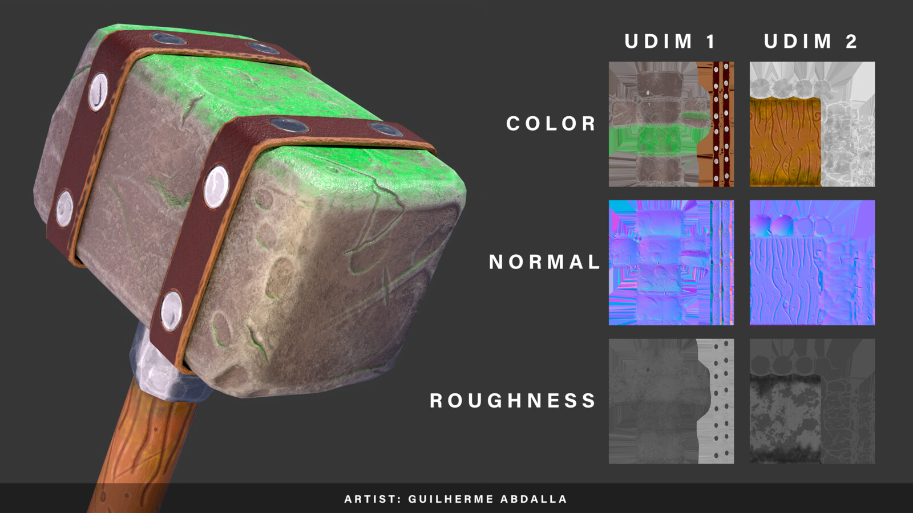
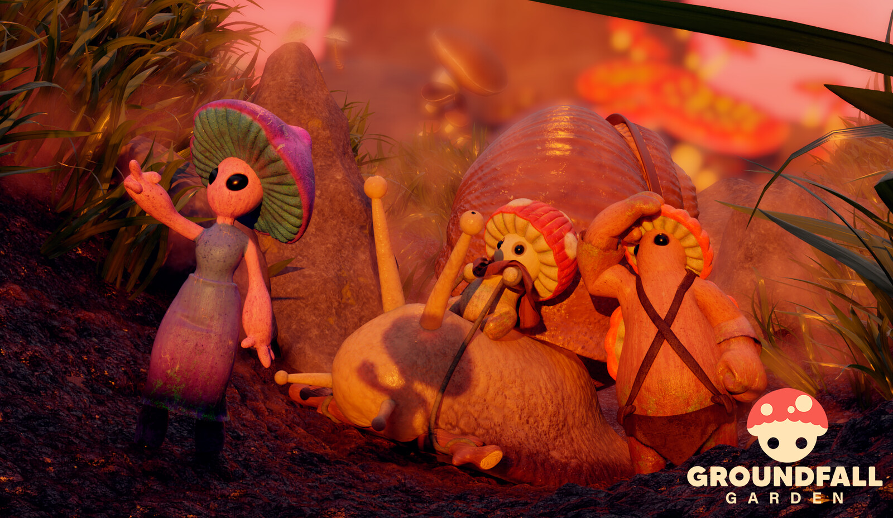
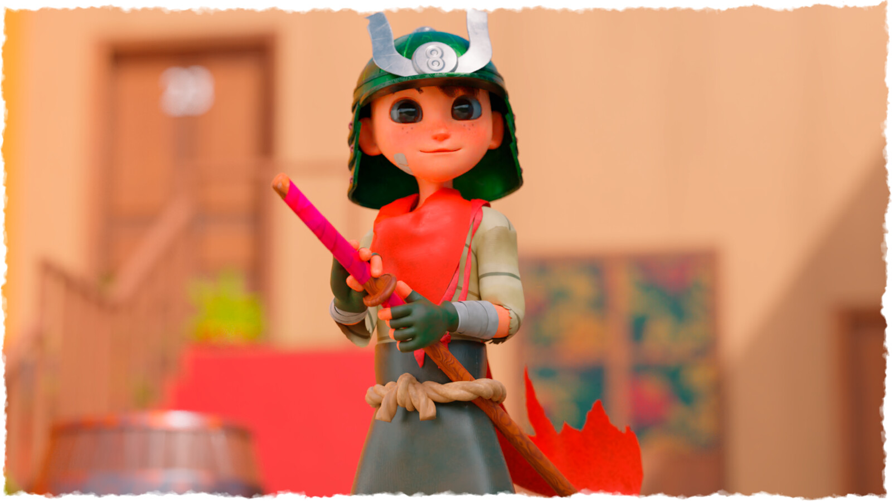

Me chamo Guilherme Abdalla, sou formado em Jogos Digitais pela Universidade Paulista e desde muito jovem me perguntava Como os jogos são feitos?
. Ao longo do meu desenvolvimento eu pude entender melhor sobre as áreas dessa tecnologia que mistura tantas técnicas e artes diferentes. No começo me dediquei exclusivamente a modelagem 3D, pois adorava a ideia de trazer meus personagens a vida, mas depois vim a estudar programação em c# para Unity, para que eu pudesse tirar as ideias do papel e desenvolver meus próprios jogos.
  